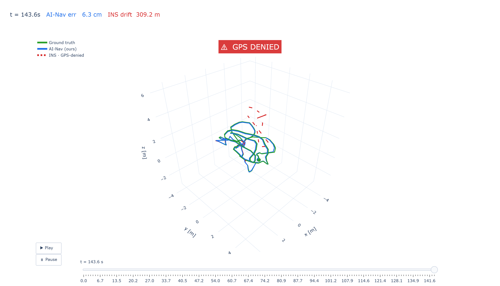

When GPS is jammed, denied, or spoofed, the aircraft must navigate on sensors an adversary cannot corrupt. A lightweight neural network learns the IMU's systematic error and removes it before a classical filter runs — keeping heading and position bounded with no external signal and no magnetometer.
In contested airspace, satellite navigation is routinely attacked. When the fix disappears, the UAV falls back on its Inertial Measurement Unit — and raw inertial navigation diverges within seconds.
The signal is drowned out by hostile emitters. Routine in modern EW environments and contested logistics corridors.
The signal is absent — indoor, urban canyon, terrain-masked, or deliberately withheld theatre-wide.
The signal is falsified. The aircraft is confidently steered off course by an adversary. Trust in GNSS is gone.
A two-stage architecture: a ~19k-parameter neural denoiser removes the systematic gyro error the filter is structurally blind to — including the unobservable yaw bias — then a proven 15-state Error-State Kalman Filter fuses the cleaned signal. Each stage validated in isolation.
3-axis gyro + 3-axis accel. Always available. Cannot be jammed or spoofed from outside the airframe.
Dilated 1-D CNN, ~19k params. Learns the IMU's systematic bias from data and subtracts it — bounded, zero-initialised, can only improve the raw signal.
15-state ESKF: attitude, velocity, position, gyro & accel bias. Gravity-tilt update pins roll/pitch. Deterministic, certifiable core.
Bounded heading & attitude the instant GPS is lost. Optional stereo camera layer bounds absolute position to centimetres.
ω̂ = ωraw + α·tanh( fθ(window) )
bounded correction, α = 0.15 rad/s · zero-initialised: training starts at the raw gyro and can only improve itAn adversary who can deny GPS can also spoof a magnetometer. Heading is held by the denoised gyro alone — verified in code: no heading measurement of any kind enters the filter.
OpenVINS stereo visual-inertial odometry rides on the same estimator core: ~6.2 cm position error — a ~5000× reduction over inertial-only navigation.
Strict cross-sequence hold-out on ground-truthed flight data (EuRoC MAV). The AI is never told the true bias — both sides start blind, the realistic GPS-denied case. Every number is the mean over five independently-seeded retrains.
LOG-SCALE BARS · V1_02 / V1_01 HELD-OUT SEQUENCES
| Sequence | Raw ESKF | AI-Nav | Oracle | Gain |
|---|---|---|---|---|
| V1_02 · medium | 76.0° | 1.57° | 0.75° | −97.9% |
| MH_02 · easy | 90.2° | 11.58° | 5.08° | −87.2% |
| V2_03 · difficult | 102.7° | 3.44° | 4.67° | −96.6% |
On the hardest sequence the learned system beats the oracle on every seed — without ever being told the bias. The learned z-axis correction (−4.4°/s) matches the sensor's true yaw bias (+4.34°/s).
The question a defence buyer actually asks — answered as a curve, not a point. 20 GPS-cut instants swept across real flight; from each cut the system dead-reckons on inertial data alone. Median over all cuts. Identical filter both sides — the only difference is the AI cleaning the gyro first.
| Denial time | Conventional INS | AI-Nav (ours) | Gain |
|---|---|---|---|
| 30 s | 290 m | 67 m | +77% |
| 60 s | 781 m | 288 m | +63% |
| 120 s | 1 704 m | 582 m | +66% |
Real EuRoC flight, three estimators on one clock — final frame shown, t = 143.6 s. The conventional INS has ballooned to 309 m off course; AI-Nav sits 6.3 cm from truth. Interactive version in the HTML deck.

Three questions decide whether a result is trustworthy: does it survive a different random seed, a different environment, a different sensor? All three tested directly — and the failure modes are reported at full strength.
Training is essentially deterministic: validation error 0.096° ± 0.001° (~1% spread). The network reliably learns the same correction — the win is a property of the method, not a lucky checkpoint.
A network that never saw a Vicon room reaches 3.20° on the hardest room — beating the oracle. Reverse direction degrades gracefully, never fails: worst case still a 5× win over raw.
Frozen, the network does not transfer to a different IMU (it encodes one sensor's bias). A short per-IMU fine-tune on a physically different Bosch MEMS unit restores the win on never-seen data: 1.62° → 0.81°, beating raw (0.86°).
The algorithm is proven and hardened on ground-truthed flight data. One step remains between this prototype and a fielded capability — and it needs hardware, not more analysis.
Heading held by the denoised gyro alone; verified in code. A deliberate design choice: an adversary who denies GPS can also spoof a compass.
Per-IMU warm-start fine-tune demonstrated across a genuine hardware change (tactical-grade → consumer MEMS). Next: automate calibration from a short logged flight.
Characterized as a quotable curve over 20 swept GPS-cut points: 3× tighter at 60 s, ~66% tighter at every horizon tested.
~19k parameters + ESKF onto flight-controller-class compute (NVIDIA Jetson), quantized INT8, within per-sample latency budget. Parameter count and vectorized inference (44× speed-up already demonstrated in training) make the budget plausible.
Jetson-class embedded module + drone-grade IMU logs close D1 and carry a proven, honest, reproducible algorithm onto a flying platform.